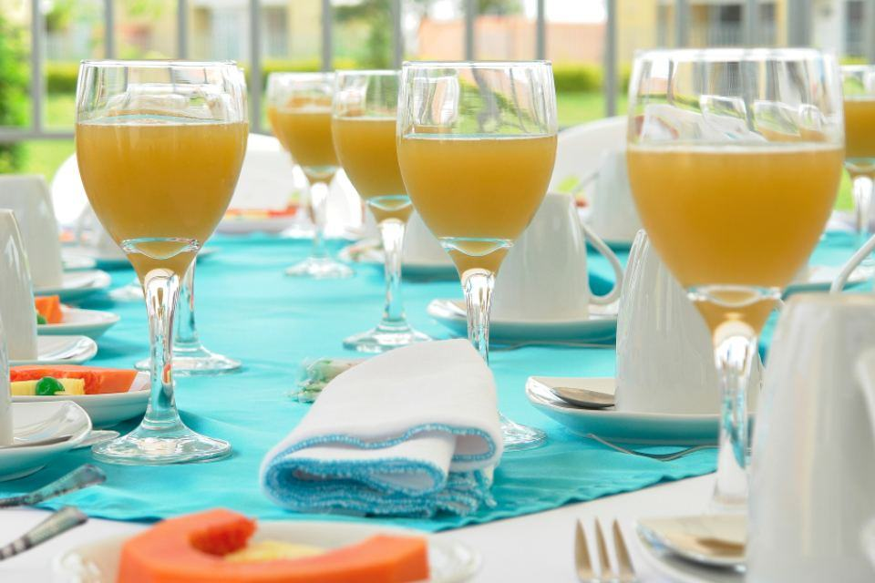
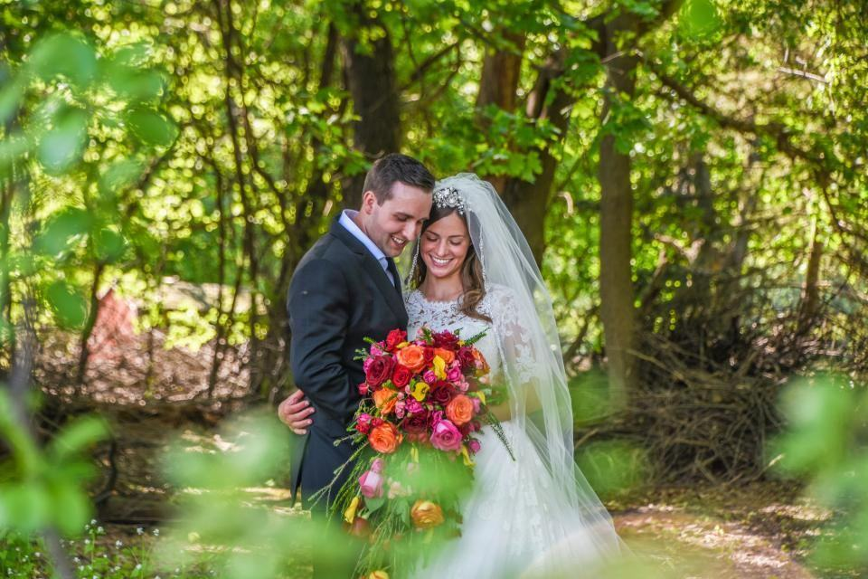

Fotografering
Idag gör vi både foto och film, och flyger drönare över de flesta bröllop vi tar. Våra kunder gifter sig sällan i stan: det är lador i Ätradalen, herrgårdar vid Åsunden och festtält på släktgården. Vi fotograferar runt 30 bröllop per år.
Foto, film eller allt?

Foto hela dagen
Jonathan fotograferar och Bengt eller en andrefotograf hjälper till med gäster och gruppbilder. Vi är vana vid stora släkter och många gruppbilder.
Ni får 600–900 redigerade bilder inom fem veckor.

Film och ljud
Anna filmar med två kameror och spelar in löften och tal med trådlösa mikrofoner. Highlightfilmen klipps med ljud från dagen, inte bara musik.
Ni får också vigsel och tal oklippta.

Drönare över gården
Vi flyger över gården, sjön och bilkortegen med en DJI Mavic 3 Pro. Jonathan har A2-kompetensbevis och är registrerad operatör hos Transportstyrelsen.
Vi flyger aldrig över gästerna och landar alltid före talen.

Ateljéporträtt
Ett klassiskt porträtt mot målad bakgrund i ateljén, i samma ljus som Bengt har använt sedan åttiotalet. Många par tar det veckan före eller efter bröllopet.
Porträttet ramas in i vår egen ramverkstad.
Från ateljébesök till färdig film
- 1

Besök ateljén
Kom in på Storgatan, titta på album och filmer och träffa oss alla tre.
- 2

Gårdsbesök
Jonathan åker ut till gården eller lokalen och planerar drönarflygning och porträttplatser.
- 3

Foto, film och luft
Foto, film och drönare enligt en gemensam tidsplan som vi har stämt av med toastmastern.
- 4

Bilder, film, album
Bilder efter fem veckor, film efter åtta och album från egen ramverkstad.